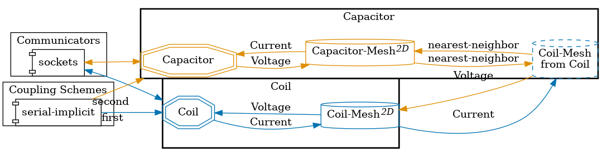
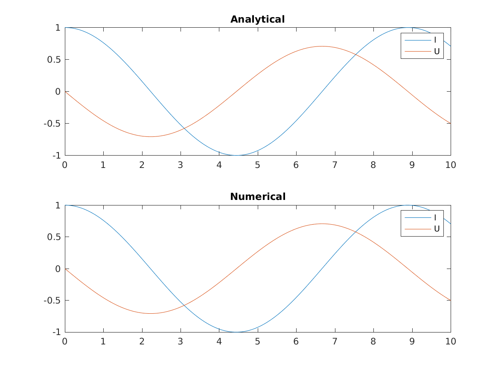

Resonant circuit
Setup
Two different solvers are coupled to simulate a two-element LC circuit. This type of circuit consists of a simple system with one inductor and one capacitor:
The circuit is described by the following system of ODEs:
$U(t) = L \frac{\text{d}I}{\text{d}t}$
$I(t) = -C \frac{\text{d}U}{\text{d}t}$
where $I$ is the current and $U$ the voltage of the circuit.
Each of these equations is solved by a different solver. Note that, as only one scalar is solved per equation, this is a 0+1 dimensional problem.
Configuration
preCICE configuration (image generated using the precice-config-visualizer):

Available solvers
- MATLAB A solver using the MATLAB bindings.
- Python A solver using the preCICE Python bindings.
- Julia A solver using the preCICE Julia bindings.
Running the simulation
All listed solvers can be used to run the simulation. Open two separate terminals and start the desired capacitor and coil participants by calling the respective run script. For example:
cd capacitor-python
./run.sh
and
cd coil-julia
./run.sh
Running the MATLAB participants
For running this example in the MATLAB GUI, first get into each of the solver folders and open a MATLAB instance for each.
After adding the MATLAB bindings to the MATLAB path (in both instances), run the coil and capacitor commands in the two windows.
The path to the preCICE configuration file is hard-coded as precice-config.xml in the solvers.
If you prefer not to use the MATLAB GUI, you can alternatively use two shells instead.
For that, modify the path in the file matlab-bindings-path.sh found in the base directory of this tutorial to the path to your MATLAB bindings.
By doing that, you can now open two shells and switch into the directories capacitor-matlab and coil-matlab and execute the run.sh scripts.
Post-processing
As we defined a watchpoint on the ‘Capacitor’ participant (see precice-config.xml), we can plot it with gnuplot using the script plot-solution.sh. You need to specify the directory of the selected solid participant as a command line argument, so that the script can pick-up the desired watchpoint file, e.g., ./plot-solution.sh capacitor-python. The resulting graph shows the voltage and current exchanged between the two participants.
Additionally, the capacitor-matlab case records the current and voltage over time. At the end of the simulation, it creates a plot with the computed waveforms of current and voltage, as well as the analytical solution.
After successfully running the coupling, one can find the curves in the folder capacitor-matlab as Curves.png.
Example of a Curves.png plot:

References
[1] Schematic of a simple parallel LC circuit by First Harmonic - Own work, CC BY-SA 3.0, https://commons.wikimedia.org/w/index.php?curid=21991221